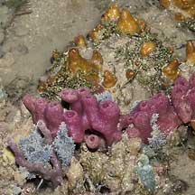
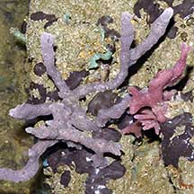
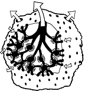
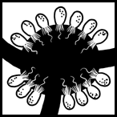
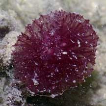
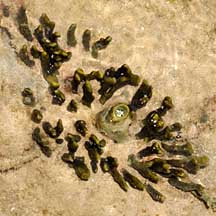

|
|
| sponges text index | photo index |
| Phylum Porifera |
| Sponges Phylum Porifera updated Oct 2016
Where seen? Sponges are commonly seen on almost all our shores. They grow on all kinds of hard surfaces, from boulders, jetty pilings to coral rubble and even other animals. While many are large and colourful, others may be small, found under stones and other hiding places and thus overlooked. What are sponges? Often mistaken for plants, sponges are actually animals, albeit very simple animals. In fact, scientists did not even consider animals until about 100 years ago! Sponges belong to Phylum Porifera which includes about 8,000 known species. Features: A sponge is a simple animal made up of a few types of cells. These cells are largely independent of one another and only loosely held together. These cells do not form tissues or organs, so a sponge does not have a mouth, digestive system or circulatory system. A sponge is NOT a colony, in the way that a hard coral is a colony of individual animals. Sometimes mistaken for other blob-like animals such as ascidians, cnidarians and even seaweed. Here's more on how to tell apart blob-like lifeforms. Riddled with canals: Sponges have a unique body plan based on a system of fine, branching canals. The sponge generates a flow of water through these canals and traps microscopic particles from this water flow Here's how it works: Inside the sponge, tiny branching canals lead to chambers. Lining these chambers are cells, each with a single beating hair. The beating of these hairs generates a current through the sponge. Water is sucked in through tiny holes on the surface of the sponge. 'Porifera' means 'pore-bearing'. These tiny holes lead to the branching canals. As the canals narrow, microscopic organic particles, bacteria and plankton in the water are captured and engulfed by the cells of the sponge. Oxygen is also absorbed. The water is then expelled out of larger holes, together with any wastes. In this way, a sponge can filter water many times its body volume in a short time. In general, a sponge can pump water equal to its body volume once every 5 seconds! A sponge constantly remoulds and finetunes its structure to ensure efficient filter feeding. A sponge can control the flow of water through it, and even stop it altogether (e.g., when the water is too silty). Sponging sponges: Some sponges harbour symbiotic organisms in their bodies. These organisms undergo photosynthesis to produce food from sunlight. The food produced is shared with the host, which in return provides the symbionts with shelter and minerals. Sponge symbionts include zooxanthallae as well as cyanobacteria. A single sponge may harbour several different kinds of symbionts! Sponges Not Softies: Although they look soft and are generally immobile, sponges are not as defenceless as they appear. Many sponges have a skeleton made up of tough, elastic fibres made of a protein called spongin. Sponges may also have a framework of spicules (tiny, hard spikes) throughout their body. Spicules may be made up of calcium carbonate (like our bones) or silica (the same substance that glass is made of). These spicules are often sharp and needle-like. Inside the body, spicules provide support, keeping the sponge upright and their canals open. Spicules also makes them an unpleasant mouthful. Spicules may also stick out of the surface, giving the sponge a rough texture. Some sponges have a spongin-only framework. Those with dense spongin skeletons feel firm, tough and rubbery. But most sponges have both spongin and spicules and feel rough to the touch.
Strange sponge shapes: Sponges may grow as a thin encrusting layer under and over hard surfaces. Others may grow upright in branches or in the shape of balls, tubes, vases or spikes. A sponge of one species may grow in different shapes depending on its environment. It may form into a thinner mat in places with strong currents, and into thicker masses in calmer waters. Sponges are only positively identified by their spicules (tiny hard spikes) that riddle their bodies. Why so colourful? Scientists don't really know why. One suggestion is that the vivid colours of some sponges warn of their toxic or distasteful nature. The colours might also be a kind of sunblock that protect from harmful rays of the sun. Some sponges harbour symbiotic algae that may colour them green, violet or brown. Sponge babies: Sponges have amazing regenerative powers. Not only can they repair damage to their bodies, but a whole sponge can slowly grow from a small bit that broke off. But this takes time, so please don't break the sponges on purpose. Sponges, however, do reproduce sexually. Most sponges are hermaphrodites, being able to perform both male and female functions. But usually, a sponge will play one role at a time. Some cells of the sponge change into eggs or sperm. While eggs are generally retained, sperm are released into the water. When sperm are 'inhaled' by another sponge of the same species, these fertilise the eggs. The eggs develop within the parent sponge. The free-swimming larvae leave the parent sponge and settle down to become new sponges. Role in the habitat: With its natural defences and a constant flow of water through it, a sponge is a safe, well-oxygenated home for tiny creatures. A large sponge may be home to a vast number and variety of such tiny animals that live in the labyrinth of canals and chambers inside the sponge. These include crabs, brittle stars and tiny snapping shrimps. Besides finding shelter, some creatures may eat larger particles that accumulate on the sponge surface. It is said that some may even feed on substances produced by the sponge. These include synaptid sea cucumbers. Larger animals may also exploit sponges for protection. For example, the Velcro crab and Sponge crab use sponges for camouflage. Sponges are also eaten by animals, such as nudibranchs, that have adapted to deal with sponge defences. Although most sponges are toxic to fish, some fishes specialise in eating sponges. Sea turtles also eat sponges. Human uses: Today, the sponges you use at home are synthetic and not made from living sponges. In the past, natural sponges were used for padding and packing, to paint with and to bathe with. Natural sponges are still used today as luxury bath items. These are made from sponges that only produce spongin skeletons and do not have lots of sharp, poky spicules like most other sponges: most commercial bath sponges are made from Spongia officinalis of the Family Spongiidae that is found in the Mediterranean Sea. While sponges in the Family Spongiidae can be found in Singapore, you certainly should not even touch most of our sponges as they have spicules that can cause skin irritation, much less bathe with them! Nowadays, living sponges have become important as potential sources of new medicines. The toxins and foul-tasting substances that sponges have developed to defend themselves are being studied for medical applications such as new antibiotics. Status and threats: None of our sponges are listed among the threatened animals of Singapore. However, like other creatures of the intertidal zone, they are affected by human activities such as reclamation and pollution. Trampling by careless visitors and over-collection can also affect local populations of sponges. Please don't break the sponges. They take time to regrow and are homes to other animals. Some sponges may also cause skin irritation. |
 Chek Jawa, May 05  Changi, Jul 04   What goes on inside a sponge  Barrel sponge Chek Jawa, Jan 02  Pink puff ball spongeChek Jawa, May 05  Daisy sponge Labrador, Jun 08  Velcro crab covered with living sponges Chek Jawa, Jun 03  Tiny brittlestars living in a sponge Pulau Sekudu, Jul 05  Synaptid sea cucumbers living on a sponge Chek Jawa, Aug 05 |
| Phylum
Porifera on Singapore shores text index and photo index of sponges on this site |
| Acknowledgements Grateful thanks to Lim Swee Cheng for identifying some of the sponges on this site. Links
References
|